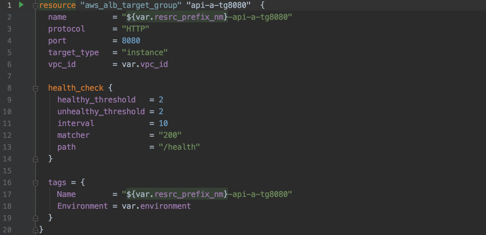
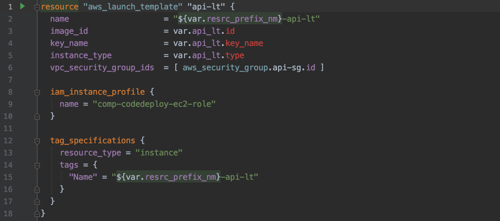
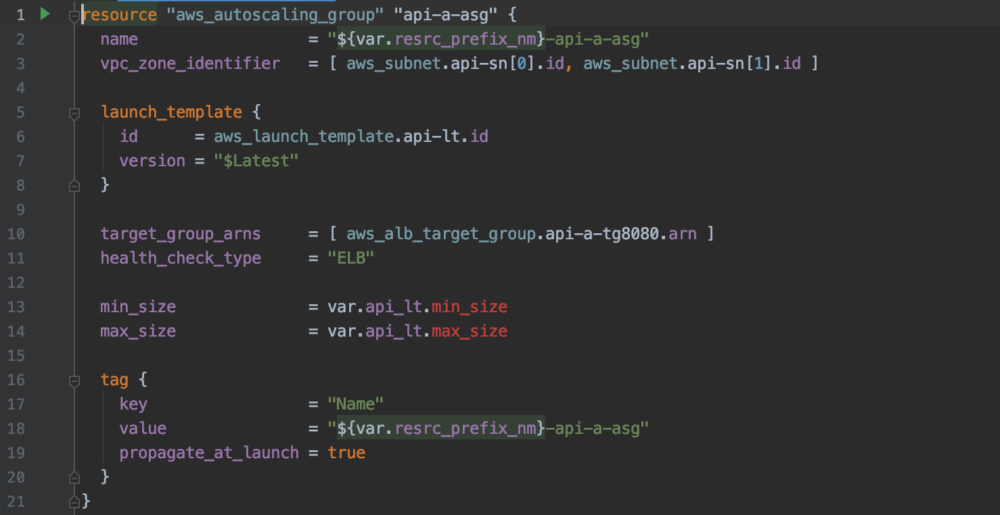
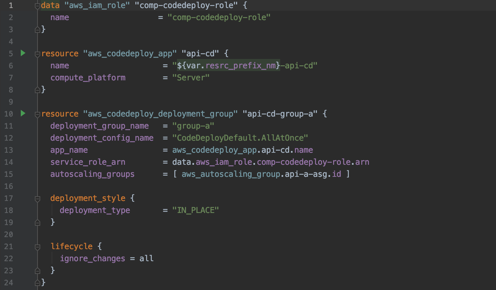

Services
- 2 tier service를 나타내는 api와 ui가 위치합니다.
- 두 서비스의 공통 인프라는 demo 폴더에 존재하며, 기구축한 NAT(comp-apne2-prod-nat)와 Route-Table 등의 정보로 구성되어 있습니다.
1. Target group
EC2 instance를AutoScaling할 수 있는단위로, Blue/Green 배포를 위해 Target Group을 2개(a, b)로 구성하였습니다.

2. Launch Template
API AMI를 바탕으로 AutoScaling Group 구성 방법을 설정합니다.

3. Autoscaling Group
Launch Template를 바탕으로 EC2 min/max 갯수와 health check 등을 설정합니다.

4. Code Deploy
aws_codedeploy_deployment_group에서 AutoScaling Group, Role, App을 설정합니다. 